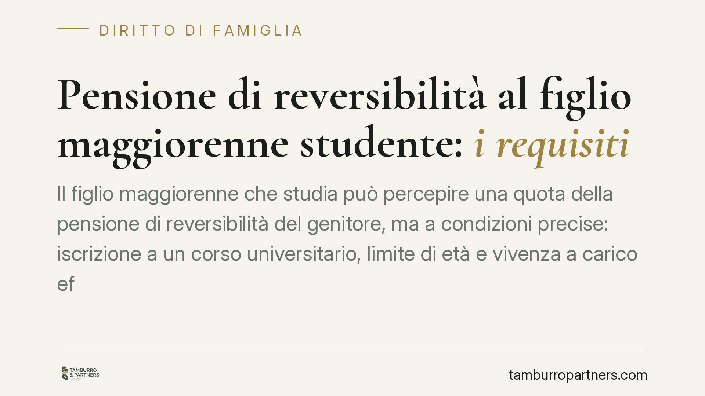

Pensione di reversibilità al figlio maggiorenne studente: i requisiti
Il figlio maggiorenne che studia può percepire una quota della pensione di reversibilità del genitore, ma a condizioni precise: iscrizione a un corso universitario, limite di età e vivenza a carico effettiva. La giurisprudenza costituzionale ha ribadito che un reddito modesto non esclude di per sé il diritto. Vediamo cosa conta davvero e cosa verificare prima di agire.

Il quadro in sintesi
La pensione di reversibilità è la prestazione previdenziale che spetta ai superstiti del titolare di pensione o dell'assicurato deceduto. Tra i beneficiari rientrano, oltre al coniuge, i figli che al momento del decesso si trovino in determinate condizioni.
Per i figli maggiorenni non basta l'età anagrafica: la legge richiede o l'inabilità al lavoro, oppure lo stato di studente entro un limite di età, unito alla cosiddetta vivenza a carico del genitore deceduto.
Inquadramento normativo
Il diritto dei figli superstiti alla reversibilità nel regime dell'assicurazione generale obbligatoria trova la sua base storica nel R.D.L. 14 aprile 1939, n. 636 (convertito con modificazioni), che disciplina le prestazioni ai superstiti nel sistema IVS (invalidità, vecchiaia e superstiti).
La distinzione dei requisiti in base all'età e alla condizione del figlio superstite — figli minori, figli inabili, figli studenti — è stata definita e coordinata dalla normativa successiva in materia previdenziale, tra cui la legge 8 agosto 1995, n. 335 (riforma del sistema pensionistico). In particolare, per i figli studenti si distinguono di regola due soglie: quella per gli studenti di scuola media superiore e quella, più elevata, per gli studenti universitari, fissata al 26° anno di età.
Su questo limite è intervenuta la Corte Costituzionale [VERIFICARE ESTREMI: Corte Cost. sent. n. ___/____], che ha chiarito i criteri di valutazione della vivenza a carico per il figlio maggiorenne studente. Nota redazionale: gli estremi esatti della pronuncia e l'articolo di legge specifico vanno verificati sulla fonte primaria (banca dati Consulta / Gazzetta Ufficiale) prima della pubblicazione. Senza citazione puntuale, questa sezione non è definitiva.
Il punto centrale: la vivenza a carico
Il requisito più delicato non è l'età, ma la vivenza a carico. Significa che il figlio, al momento della morte del genitore, dipendeva economicamente da quest'ultimo in modo abituale e prevalente.
Qui sta il chiarimento più utile della giurisprudenza costituzionale: la titolarità di un reddito modesto da parte del figlio non esclude automaticamente la vivenza a carico. Ciò che rileva è se quel reddito rende il figlio economicamente autosufficiente, oppure se resta insufficiente a garantirgli il mantenimento senza l'apporto del genitore.
Sul piano operativo, gli enti previdenziali utilizzano come parametro di riferimento soglie reddituali agganciate al trattamento minimo INPS: un reddito che si mantiene entro certi limiti tende a essere considerato compatibile con lo stato di vivenza a carico. L'importo aggiornato del trattamento minimo va verificato anno per anno, perché è rivalutato periodicamente.
Due logiche da non confondere
È importante tenere distinte due materie che spesso vengono sovrapposte.
La reversibilità appartiene al diritto previdenziale: risponde alla logica della protezione del superstite ed è regolata dai requisiti che abbiamo visto (età, studio, vivenza a carico).
Gli obblighi di mantenimento del figlio maggiorenne non autosufficiente, previsti dal codice civile, appartengono invece al diritto di famiglia e gravano sui genitori in vita. Sono due binari separati: il diritto alla reversibilità non dipende dalle regole civilistiche sul mantenimento, e viceversa.
Coordinamento tra età e durata del corso
Una precisazione spesso trascurata: il limite dei 26 anni per lo studente universitario opera come tetto massimo, non come diritto automatico fino a quella data. Il beneficio è tendenzialmente ancorato alla durata legale del corso di studi frequentato. Uno studente iscritto a un corso triennale può quindi vedere valutata la propria posizione in relazione alla durata prevista dell'ordinamento didattico, entro il limite anagrafico complessivo.
Cosa fare in concreto
- Raccogliere la documentazione di iscrizione al corso universitario, comprensiva di durata legale e regolarità del percorso.
- Ricostruire la posizione reddituale del figlio al momento del decesso, confrontandola con le soglie di riferimento collegate al trattamento minimo INPS dell'anno rilevante.
- Documentare la vivenza a carico con elementi concreti: convivenza, apporto economico del genitore, insufficienza del reddito proprio.
- Verificare l'età anagrafica e il coordinamento con la durata legale del corso di studi.
- In caso di diniego dell'ente previdenziale, valutare l'impugnazione nei termini, allegando la documentazione reddituale e formativa a sostegno.
Data la centralità della valutazione caso per caso della vivenza a carico, è opportuno un esame preliminare della singola posizione prima di presentare domanda o impugnare un rigetto.
---
*Contributo informativo a cura di Tamburro & Partners - Avv. Giuseppe Tamburro. Non costituisce parere legale.*
Ogni famiglia ha il suo equilibrio.
Separazione, divorzio, affidamento, assegno: se vuoi un confronto riservato su una specifica situazione, scrivi allo studio. Ti rispondiamo entro un giorno lavorativo.